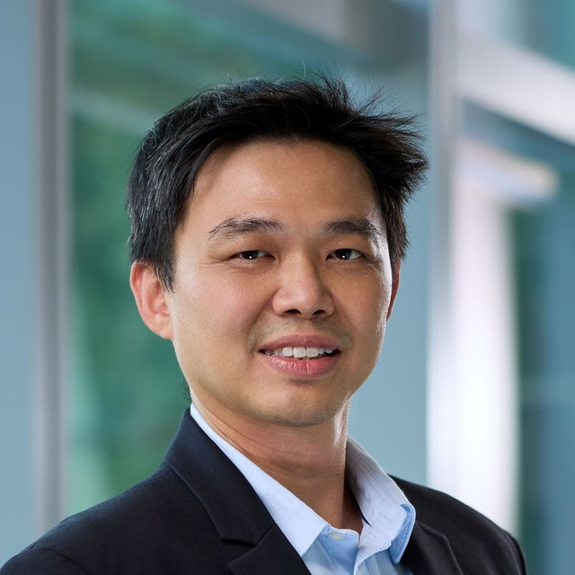

I specialise in leading transformations. Military aviator, leader, innovator.
About
I've spent 23 years in the Republic of Singapore Air Force — most of it in the air, and a good deal of it changing how the organisation works on the ground.
The pattern in my career is transitions: taking a fleet, a unit or a training system from what it was to what it needs to become. I framed and won approval for the RSAF's CH-47F and H225M acquisitions, then commanded the squadron that transitioned off the Super Puma onto the H225M. I led SOATG, the special operations aviation task group, and today I head the Flying Training Branch, where I'm rebuilding how the Air Force trains its aviators.
Alongside that role I'm reading for an MBA at NUS Business School part-time, with a particular interest in how AI and analytics change operational decision-making. Aviation has spent decades learning to make high-consequence systems safe and reliable. Much of that discipline transfers directly.
Experience
PiXEL is the department the RSAF stood up to change the way it trains and learns. I lead the transformation of Flying Training within it — rethinking how the Air Force selects, trains and qualifies its aviators, and how that learning is captured and carried forward.
Led a team of elite aviators supporting special operations — pushing the boundaries of what the platform could do while holding operational readiness for crisis response.
Commanded the squadron through the transition from the Super Puma to the H225M — a full fleet changeover covering aircrew conversion, procedures and operational capability.
Supported the Commanding Officer in delivering mission success across the squadron's operational commitments.
Accountable for flight mission success — maintaining standards, ensuring safe operations, and developing the people under my command.
Planning the future force structure of the RSAF helicopter fleet.
Drove electronic warfare concept-of-operations development and EW capability development across the Helicopter Group.
Education
General management with an emphasis on technology, AI and analytics in business practice — read part-time alongside a full-time role.
Senior professional military education in operational planning and command.
Top GraduateStrategic and security studies, completed alongside staff college.
Undergraduate study pursued in parallel with full-time operational flying.
Technical foundation in computing and digital media.
Skills & Certifications
Contact
Open to conversations about aviation, transformation and capability development, AI in operations, and post-MBA opportunities.